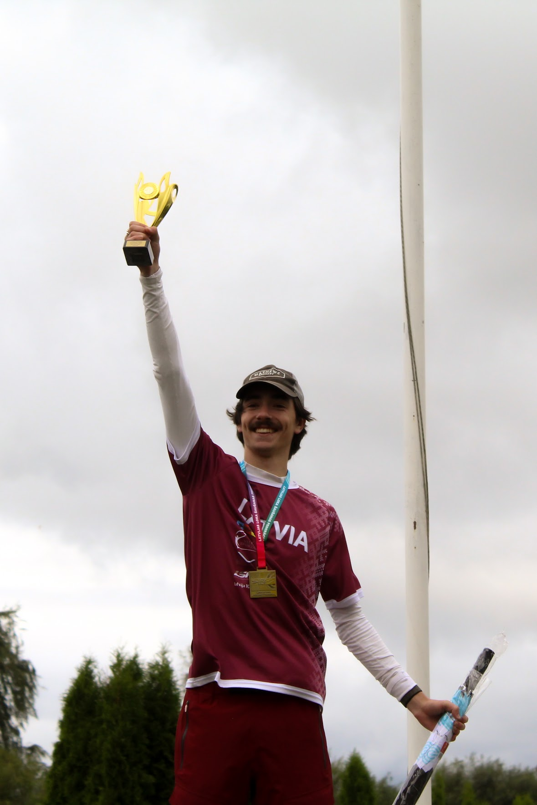

À PROPOS
Salut ! Moi, c’est Danila,
ou Dan pour faire court.
J’aime résoudre des problèmes et faire fonctionner les choses

Mon parcours
Je m’appelle Danila Runiskovs, mais presque tout le monde m’appelle Dan. Je suis étudiant à Howest University of Applied Sciences, dans le cursus Digital Arts and Entertainment, avec une spécialisation en Game Development. J’y apprends la programmation du gameplay, l’architecture des moteurs, les structures de données, les algorithmes et l’optimisation, principalement en C++ et en C#. Au fil de mes études, j’ai aussi exploré la modélisation procédurale dans Houdini, les simulations et la création de logiciels pour la Nintendo NES.
Ce n’est pas ma première expérience dans l’enseignement supérieur. J’ai auparavant étudié la traduction et l’interprétation à l’ULB, à Bruxelles, où j’ai développé mes compétences linguistiques et relationnelles.
Ces dernières années m’ont appris à ne pas avoir peur de l’inconnu. En apprenant et en pratiquant, il n’y a pas de montagne que je ne puisse gravir.
Langues
Ce que je recherche
Je suis au début de ma carrière et ouvert aux opportunités, où qu’elles me mènent. Je suis prêt à déménager, à m’adapter à un nouvel environnement et à rejoindre une nouvelle équipe. La programmation du gameplay et des moteurs m’intéresse particulièrement, mais je suis aussi curieux de découvrir ce qui existe au-delà des jeux. J’aimerais en apprendre davantage sur la robotique et les logiciels embarqués.
Mes études m’ont donné de bonnes bases en conception bas niveau et en algorithmique. Je veux m’appuyer sur ces acquis, relever de nouveaux défis et continuer à développer mes compétences.
Si vous cherchez quelqu’un avec de solides bases techniques, l’envie d’apprendre et la détermination nécessaire pour relever des défis inconnus, je serais ravi d’échanger avec vous.
Mes compétences
- Langages
- C++
- C#
- Assembleur 6502
- Logiciels et moteurs
- Visual Studio
- Visual Studio Code
- Unreal Engine
- Unity
- Architecture de moteur personnalisé (SDL)
- Outils
- CMake
- Git
- En cours d’apprentissage
- CUDA C++
- Unreal C++